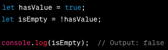
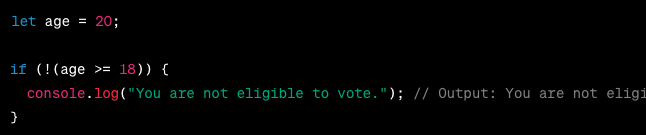

Logical and Comparison Operators
These operators are used to perform logical and comparison operations on values.
Logical Operators:
-
Logical AND (&&): Returns true (meaning run the code) if both operands are true (meaning if both sides of the condition are met).
-
Logical OR (||): Returns true (will run the code) if at least one of the operands is true (meaning one side of the condition is met).
-
Logical NOT (!): Reverses the logical state of an operand (it runs the code if the condition is not true).

Comparison Operators
-
Equal (==): Checks if two values are equal. However, it has some unexpected behavior due to type coercion. Type coercion refers to the automatic conversion of one data type to another by the JavaScript engine.
console.log(5 + "5"); // output: "55".
Generally, strict equality is preferred.
-
Strict Equal (===): Checks if two values are equal and does not perform type coercion.
-
Not Equal (!=): Checks if two values are not equal. Sometimes it does perform type coercion.
-
Strict Not Equal (!==): Checks if two values or the types of two values are not equal.
-
Greater than (>): Checks if one value is greater than another value.
-
Less than (<): Checks if one value is less than another value.
-
Greater than or equal to (>=): Checks if one value is greater than or equal to another value.
-
Less than or equal to (<=): Checks if one value is less than or equal to another value.
-
Another example of Logical NOT Comparison Operator
